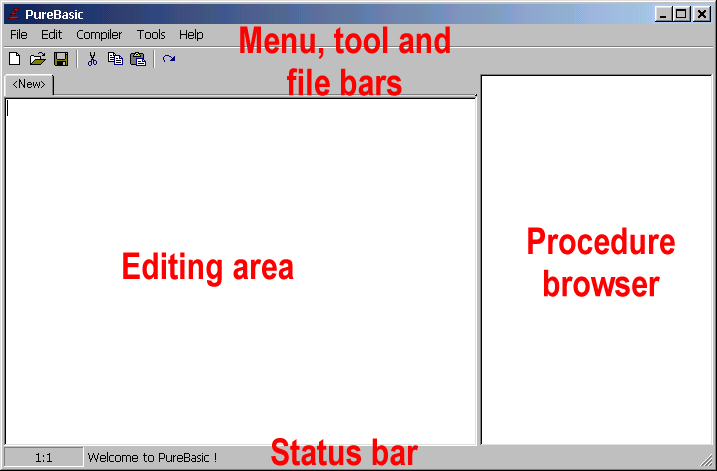

Die Menü-Leisten am oberen Ende des Fensters ermöglichen Ihnen den Zugang zu den vertrauten Standardfunktionen wie Öffnen, Schließen und Speichern von Dateien sowie den Editier-Funktionen wie Ausschneiden, Kopieren und Einfügen. Sie können auch den Compiler über diese Menüs steuern. Die Datei-Leiste ist ein Satz an Knöpfen, welche Ihnen das Anzeigen und die Auswahl, welche Datei Sie aktuell bearbeiten möchten, ermöglicht (der Editor unterstützt das gleichzeitige Arbeiten mit mehreren Dateien).
Der Editierbereich ist (standardmäßig) auf der linken Seite des Fensters. Dies ist der Bereich, wo Sie Ihren Quellcode editieren.
Auf der rechten Seite des Fensters befindet sich der Prozeduren-Browser. Wenn Sie ein spezielles Stück Code eingeben, welches als Prozedur bekannt ist, wird dieses im Prozeduren-Browser angezeigt und ermöglicht Ihnen somit das schnelle Navigieren innerhalb des Quellcodes. Der Prozeduren-Browser kann auch auf die linke Seite des Fensters verschoben werden oder als ein Aufklapp-Menü in der Werkzeugleiste benutzt werden.
Als letztes zeigt Ihnen die Status-Leiste am unteren Ende des Fensters Informationen und Statistiken über die gegenwärtig editierte Datei an, wie Zeilennummer und Cursorposition.
Die wichtigsten Schritte, denen Sie beim Eingeben und Starten von in PureBasic geschriebenen Programmen folgen müssen, lauten wie folgt:
Natürlich gibt es einige Optionen, welche Sie beim Compiler einstellen können, trotzdem belassen wir es zunächst bei den Standardwerten. Wenn es im Verlauf dieses Benutzerhandbuchs notwendig wird, diese zu verändern, wird dies im betreffenden Abschnitt erklärt, der eine Änderung erfordert. Die eine Option, die bereits jetzt erwähnt werden soll, ist die Option, die den Laufzeitdebugger einschaltet oder ausschaltet. Diese ist beim "Compiler-Menü->Debugger" Eintrag zu finden und ist abgehakt, wenn der Debugger eingeschalten ist. Normalerweise wollen Sie beim Testen Ihrer Programme, dass der Debugger aktiviert ist. Vergewissern sich also, dass er eingeschaltet ist.
Vollständige Instruktionen über die Benutzung des Editors finden Sie im Abschnitt Benutzung des integrierten Editors des Referenzhandbuchs.
| Vorheriges Thema | Kapitel-Inhalt | Nächstes Thema |
|---|---|---|
| Installation und Start von PureBasic | Benutzerhandbuch Inhalt | Keines |